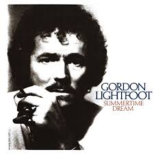

The Wreck of the Edmund Fitzgerald

| Artist | Gordon Lightfoot |
|---|---|
| Released | 1976 |
| Album | Summertime Dream |
| Length | 6 minutes, 31 seconds |
| Genre | Folk, Folk Rock |
| Label | Reprise Records |
| Written by | Gordon Lightfoot |
| Chart Peak (U.S.) | #2, Billboard Hot 100 |
| Chart Peak (Canada) | #1, RPM Charts |
| Subject | Sinking of the S.S. Edmund Fitzgerald |
Background and Composition
"The Wreck of the Edmund Fitzgerald" is a folk ballad written and recorded by Canadian singer-songwriter Gordon Lightfoot, released in 1976 on his album Summertime Dream. The song recounts the sinking of the SS Edmund Fitzgerald on Lake Superior on November 10, 1975, in which all 29 crew members perished. Running over six and a half minutes, it is one of the longest songs to crack the top five of the Billboard Hot 100, and it remains one of the most enduring examples of the folk tradition of bearing witness to tragedy through music.
Lightfoot learned of the Fitzgerald disaster through a Newsweek article published shortly after the sinking. He was struck by the scale of the loss and the eerie absence of any explanation — no distress call, no survivors, no definitive cause. He spent several months researching the event before writing the song, consulting maritime records and news accounts in an effort to get the details right. His approach was journalistic as much as artistic: he wanted the song to serve as a factual record as well as an emotional tribute.
Lightfoot was already one of Canada's most celebrated singer-songwriters when he wrote "The Wreck of the Edmund Fitzgerald." He had built his reputation through carefully crafted narrative songs drawn from both personal experience and historical subject matter, including "Canadian Railroad Trilogy" and "The Pony Man." The Fitzgerald song was consistent with this approach, a piece of carefully researched, narratively grounded folk music that treated a real event with documentary seriousness.
Musical Structure
The song is built around a repeated fingerpicked guitar pattern over which Lightfoot delivers the narrative in his characteristically warm baritone. The structure is essentially verse-based, with each verse advancing the story chronologically through the ship's final day. There is no traditional chorus in the pop sense; instead, the song returns periodically to the name of the ship and the lake that claimed her, functioning like a tolling bell.
The verses move at a deliberate pace, allowing the listener to absorb each detail before the next arrives. Lightfoot reportedly revised the song several times to ensure factual accuracy, and he later corrected a lyrical error, referring to the ship's cook as "the cook" when the actual cook's position was slightly different, after being contacted by a surviving family member.
"The legend lives on from the Chippewa on down / of the big lake they called 'Gitche Gumee'…" — Opening lines, Gordon Lightfoot, 1976
Reception
The song reached number two on the Billboard Hot 100 in November 1976, exactly one year after the disaster it commemorated. It was one of the best-selling singles of that year and introduced the story of the Fitzgerald to millions of listeners with no prior connection to the Great Lakes shipping industry. In Canada, it reached number one on the RPM charts. It was nominated for a Grammy Award for Best Male Pop Vocal Performance.
Critical response was largely positive, though some reviewers noted that the song's considerable length — unusual for a radio single — might limit its commercial reach. In the event, radio programmers embraced it, and it received heavy rotation across both pop and adult contemporary formats.
The Folk Tradition of Memorial Songs
The song belongs to a long tradition in folk and popular music of directly memorializing specific tragic events. This tradition stretches from traditional sea shanties and mining disaster ballads through the topical songwriting of the folk revival in the 1960s. In this tradition, the songwriter acts as a kind of historian-in-verse, preserving events that might otherwise be forgotten and giving them an emotional form that historical record alone cannot provide.
In this sense, "The Wreck of the Edmund Fitzgerald" is closely related to a broader family of songs that responded to specific American tragedies with urgency and moral seriousness. The most notable of these in the same era was "Ohio" by Crosby, Stills, Nash & Young, written in 1970 in the immediate aftermath of the Kent State massacre. Both songs share an urgency of composition, a commitment to factual grounding, and a moral weight that has sustained them long after the immediate moment that prompted their creation, though "Ohio" is a two-minute burst of rock fury where the Fitzgerald song is a seven-minute narrative elegy.
Legacy
Over the decades, "The Wreck of the Edmund Fitzgerald" has been covered by dozens of artists across genres ranging from bluegrass to heavy metal. It is regularly played at the annual memorial service held at Whitefish Point, Michigan, on each November 10. Gordon Lightfoot performed it at a commemoration marking the 35th anniversary of the sinking in 2010.
In 2003, Lightfoot gave the only version he has ever officially acknowledged as authoritative — a re-recorded version for a compilation album in which he corrected the factual error about the ship's cook mentioned above. The song's place in American and Canadian folk music is firmly established, and it has become a durable reference point in discussions of how popular music can function as collective memory and public mourning.
Sources:
- "Album Recording Notes." Lightfoot! United Artists Records, 1966.
- Bulanda, George. "Great Mariner's Church Remembers Edmund Fitzgerald on 35th Anniversary of Sinking." Hour Detroit, Nov. 2010. ISSN 1098-9684. Archived from the original on 6 Nov. 2010.
- "Edmund Fitzgerald Memorialized with 31 Rings of Its Bell at Great Lakes Maritime Academy." 910News.com. Archived from the original on 17 Aug. 2024.
- "Item Display: RPM." Library and Archives Canada. Archived from the original on 15 Oct. 2012. Retrieved 25 Feb. 2026.
- Jennings, Nicholas. Lightfoot. Viking, 2016, p. 148. ISBN 978-0-735-23255-6.
- "Official Singles Chart Top 50: 23 January 1977 – 29 January 1977." Official Charts Company.
- Perlmuter, Adam. "Learn to Play Gordon Lightfoot's 'The Wreck of the Edmund Fitzgerald.'" Acoustic Guitar, 22 Sept. 2023.
- Sparling, Heather. Disaster Songs as Intangible Memorials in Atlantic Canada. Taylor & Francis, 2023. ISBN 978-1-032-11120-9.
- Stevenson, Jane. "Lightfoot Changes 'Edmund Fitzgerald' Lyric." Toronto Sun, 26 Mar. 2010. Archived from the original on 28 Mar. 2010. Retrieved 11 Mar. 2026.